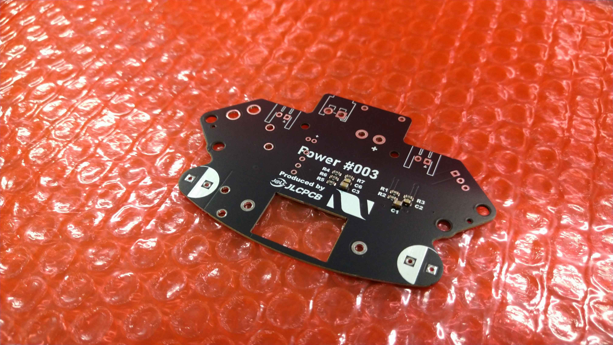
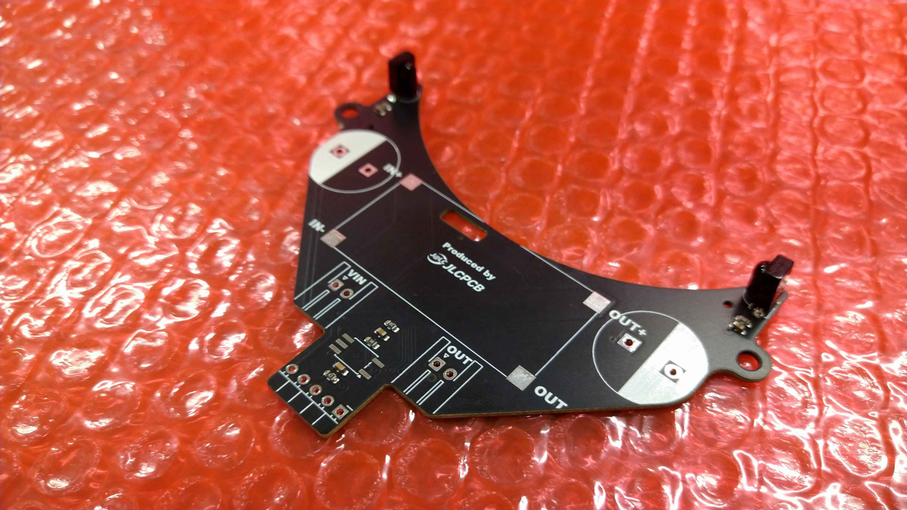
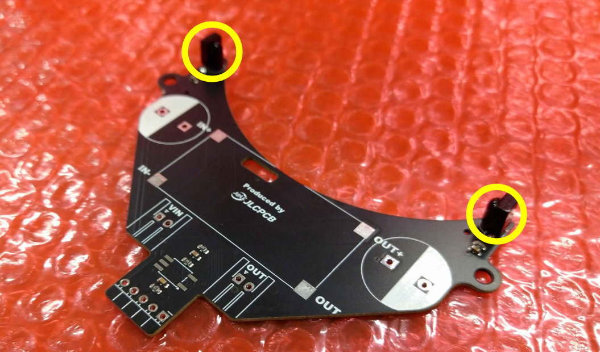
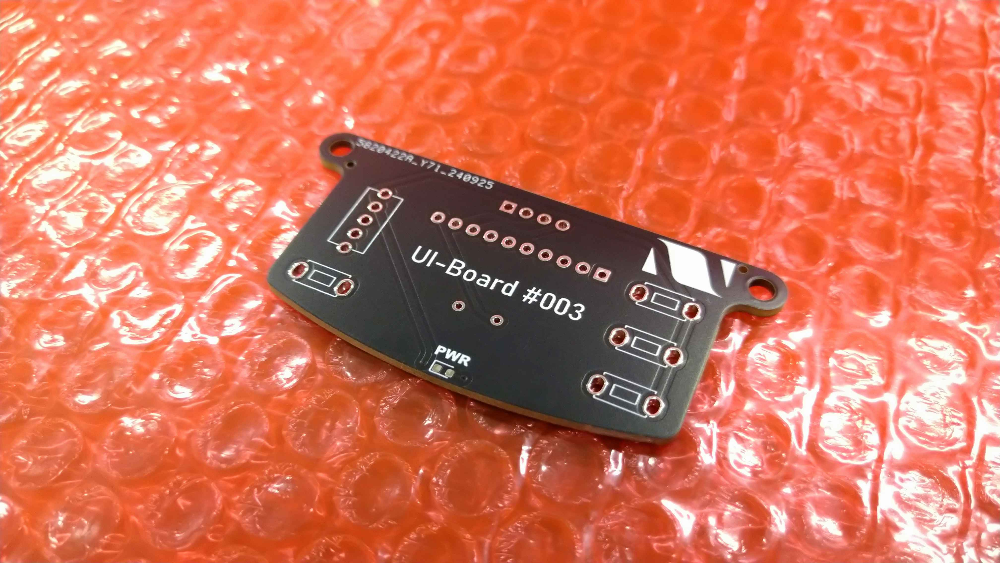
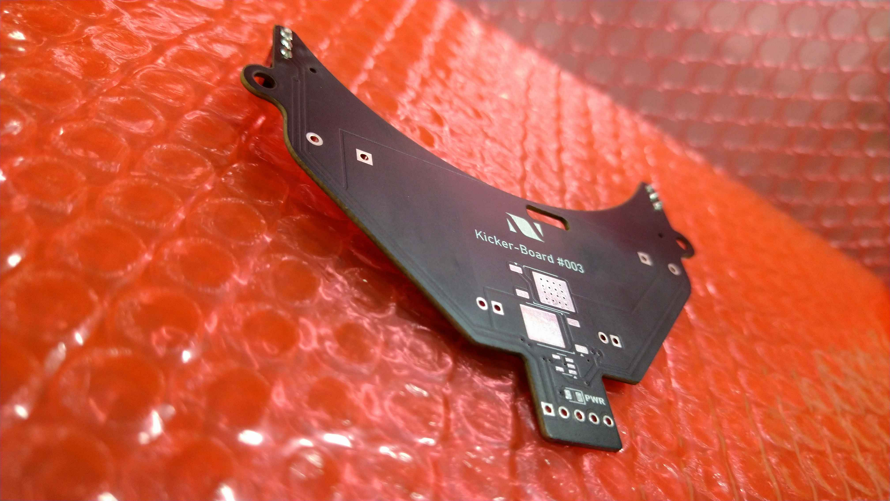
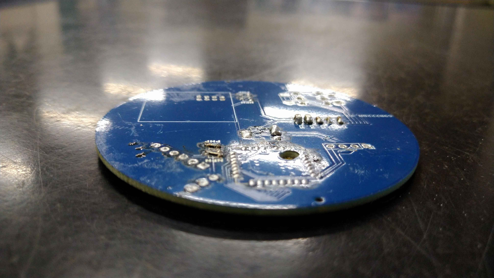

TOINIOT² Blog
基板-KIBAN-
2024-10-16 Writer: 010
こんにちは。今回はJLCPCB様にまたまた基板を頼ませてもらったお話。電源、UI、キッカー基板の3種類です。
いやもうその基板何回頼んでんねんと突っ込みたくなるところですが、RCJ最後の年、完璧な基板で大会に臨みたいもの。
そんな僕たちを支援してくださっているJLCPCB様についてまずは説明させてください。
JLCPCBは主に基板製作を手掛けている会社です。しかし、それだけではなく、3DプリントやCNC加工なども行っており、彼らに作れないものはない！と言っても過言ではありません。
そして、JLCPCB最大の特徴は「安い」「早い」「正確」の3拍子がそろっていること。商品自体は1$から発注可能、工場は海外にあるのに、空輸とはいえ発注から2週間かからずでの到着はかなり魅力的です。
しかもこの2週間とはあくまでも通常配達での話。速達サービスを使えば数日で届きます。1週間もかかりません。ここでもう一度言っておきます。出荷元は海外です！日本ではありません‼凄すぎ…
もちろん、確立された機械生産によって不良品に当たる可能性はほとんどなく、少なくても僕たちは一度も遭遇していません(僕たちの設計ミスはたくさんありましたが(笑))。
あとそうそう、オペレーターの方がメールで注文内容について応対してくれるのも推しポイント!!以前僕たちが頼ませていただいた基板の中に構造上貧弱になっている箇所があったのですが、このままでは危ないこと、解決策などを提案していただき事なきを得ました。
しかも全部無料で…!(*'▽')
今ならクーポンもゲットできるみたいです。
この機会をお見逃しなく！！

↓JLCPCB様のHP
https://jlcpcb.jp/
↓クーポンゲットのチャンス！
・新規ユーザー$60クーポン
https://jlcpcb.com/JPV
・その他のクーポン
https://jlcpcb.jp/coupon-center?from=6layer
さて、ここからは各基板について詳しく見ていきましょう。
【電源基板】

ロボットの要となるのが電源。もちろんCPUを積んだメイン基板も絶対に必要ですが、そのCPUは電気がなければ動きません。
そしてそれを統括しているのが電源基板です。ただ、その特性上多くの他の基板に繋がっているだけでなく、常に大電流も流れています。
万が一ショートでもしたら…考えるだけでも怖いですよね。どこかの誰かさんは中1の頃電池ボックスのプラスマイナスを間違えて差してしまい、3万円超えの大損害を出したそうですね(それあなたです)。
まぁ電池ボックスならともかく、回路が埋め込まれている基板ではそんな簡単にはいきません。
なんせ、設計、製造ミスがあったとしても修正が難しいのは当然のこと、そもそもミスに気づけないんです。じゃあどうすればいいのか…ミスをしないようにするしかありませんよね。
とは言えそれって自作だと結構難しい。エッチング銅板溶かして…がベターだと思いますが、かなりの確率で失敗する。そこで登場するのがJLCPCBさんです。
冒頭の説明でも触れましたが、とにかく製品にミスがない。毎回必ず完璧なものを私たちに提供してくれます。この会社失敗という言葉を知らないのかと言いたいレベル。
さらに普通に安いので、本当にありがたい限りなのです。
【キッカー基板】

さて、お次はキッカー基板。こちらはこちらでなかなかの重要度。主にこれの目的は昇圧です。
私たちはキッカー(ボールを蹴り出す機構)にソレノイドというものを使用しているのですが、この機械、少々厄介なことにちょっとやそっとの電圧では微動だにしないんです。
使用しているバッテリーは9.6Vで、これを45Vほどに昇圧しなければなりません。もしも燃えたら?…大事故です。電源基板もそうですが、こちらもミスは絶対に許されません。
安心安全のJLCPCBさんの基板を是非とも使いたいところです。話は変わりますが、この基板、よく見るとなにやら先のほうにセンサがついていますよね。

これはボールを感知する赤外線センサなのですが、当然ボールセンサやそれをのせる基板は別にあります。ではなぜここにあるのか…?それは、キッカーを作動させる(=ボールをキックする)タイミングを見計らうため。
僕たちがロボットにキッカーをつむのはRCJライトウェイト初挑戦の年(2021-2022シーズン)以来なのですが、その1回目のときのものがこちら。
チームで初めて作った試作機…この時はまだ中2でした。なつかしい( ´∀｀ )
それはともかく、動画を見てもらえればお分かりいただけると思いますがずーっとパコパコしてますよね。
試合の時もこれでした。とーっても非効率ですし、はじかなくていい時にボールをはじいて絶好のゴールチャンスを逃すことも何度かありました(てかそもそもこのときはソレノイドなんていう素晴らしいものは使っておらず、ただ単にTJ3Bのモーターに軸をつけてぶん回していただけなんですよね。まあ構造は至ってシンプルで扱いやすかったし性能も意外と悪くはなかったですよ…見た目の割には笑)。
これを改善するために取り付けたのが両端のセンサ、というわけです。ボールがロボットの前に来れば値が変化するので、そのタイミングでキーーーック!!
そもそもの話、45Vに昇圧しているソレノイドでパコパコなんかしたら確実にロボットが逝きます()
【UI基板】

最後に紹介するのがUI基板です。前2つとは違い、この基板、実はロボットに「絶対」必要なものではありません。
写真は何もはんだ付けされていないですが、完成するとボタンやモニターなどが取り付けられます。
そして、ロボットの操作やセンサ実験の確認などロボットを円滑に動かすために役立てられます。要はロボットを美しく保つために必要なわけです。
…どうせなら基板もかっこよくしたいな〜(^^♪
自作だと大体銅色だしなー(´；ω；｀)
……うん…!?
この美しい、漆黒!!凄い!!

そう、JLCPCBさんの強みは安全なだけじゃない。基板を本当に綺麗に仕上げてくれるんです。
私たちは色の規制が厳しいロボカップジュニアで使用するため、基本的には黒のみを頼ませていただいていますが、他にも何色かあり、例えば下の缶サット甲子園という模擬人工衛星をロケットで打ち上げる大会で使用したものだと…

かっこいい青ですね。緑で頼ませてもらった事もありました。
とまぁこんな感じでJLCPCBさんは安心安全な基板を美しく、そして少ない日数で作ってくれます。皆さんもぜひ頼んでみてください。
本日はここまで。
最後まで読んでいただきありがとうございました!!